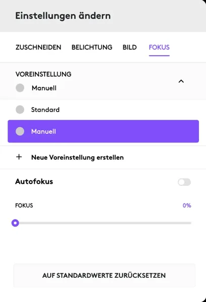

Scharf stellenBall ins Feld legen und den Regler FOKUS schieben, bis der Ball in der Vorschau scharf ist. Bei 2–3 m Höhe meist weit unten, nahe 0 %.
BelichtungIm Reiter BELICHTUNG auch die Automatik ausschalten, damit die Ballfarbe gleich bleibt.
Zurück zur AppLogi Options+ schließen und hier die Kamera starten. Nach dem Umstecken prüfen, ob „Manuell“ noch gewählt ist.

Logi Options+, Reiter FOKUS
Die C920 liefert höchstens 30 Bilder pro Sekunde. Darum unter Einrichtung den Kamera-Modus „Scharf“ lassen und einmal „Verzögerung messen“ drücken. Die Auflösung in der Vorschau von Logi Options+ gilt nur dort – die App stellt ihre selbst ein.
Wenn der Ball nicht erkannt wird
Im Kamerabild direkt auf den Ball klicken – das lernt seine Farbe.
„Erkennung testen“ sagt, was nicht passt, und gibt Tipps.
Ball und Schläger in verschiedenen Farben; nichts anderes in Ballfarbe im Feld.
Kamera so, dass das Feld das Bild gut ausfüllt; einmal scharf stellen.
Ring hinkt hinterher? „Verzögerung messen“ und am Beamer den Spielmodus einschalten.